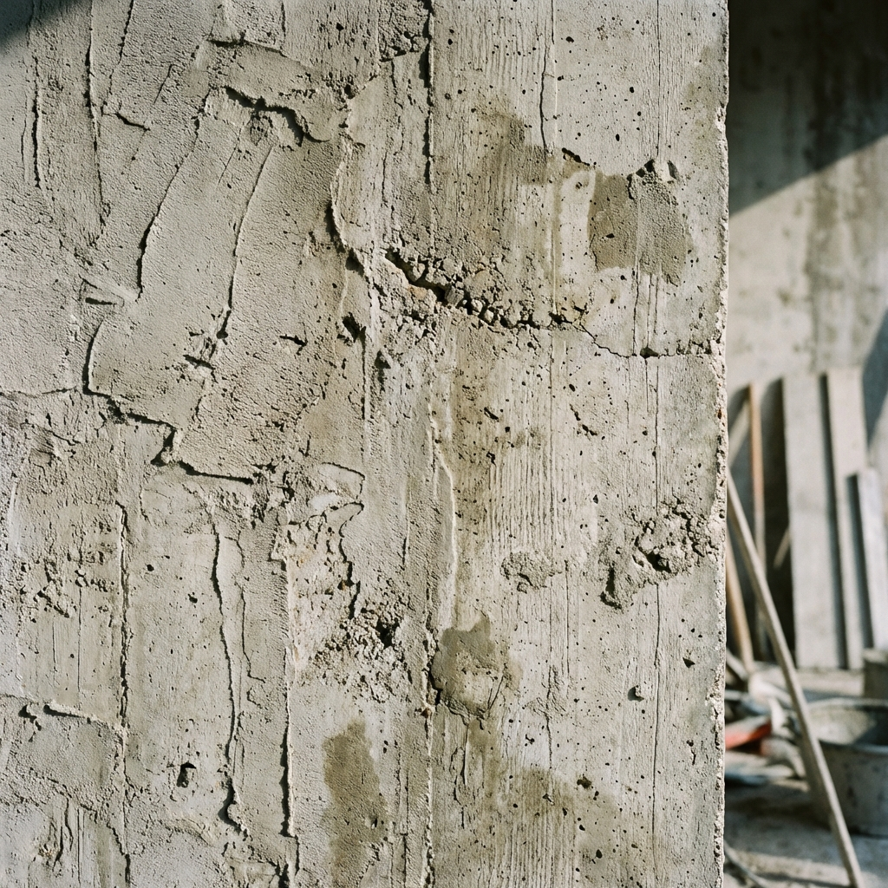

01
牆面地面不平整？
基層處理不當導致平整度誤差 >5mm，影響後續磁磚、油漆施工。需用 2m 直尺檢測，嚴格控制 ±3mm 標準。
免費現場估價從基礎打底、水泥粉刷到地坪整平，泥作是建築的骨幹工程。 我們堅持 CNS 61 標準施工，採用 1:3 砂漿配比，確保每一面牆、每一片地坪都平整耐用。
採用 CNS 61 卜特蘭水泥 + CNS 387 建築用砂，分層施工確保強度 ≥15MPa，平整度控制 ±3mm。
清除舊有粉刷層、油污、灰塵，修補基層缺陷，確保黏結力 ≥0.4MPa。使用鋼刷 + 高壓水槍清潔表面。
使用雷射水平儀設置控制線，確定施工厚度。底層砂漿厚度≥1.5cm，主要功能為找平與黏結。
中層厚度約1.0-1.5cm，增強整體結構強度。使用鋁尺 + 木抹刀找平修整，表面粗化處理利於面層附著。
面層厚度約5mm，達到最終平整度與美觀效果。使用鐵抹刀壓光至鏡面效果，平整度控制±3mm/2m。
保濕養護≥7天，防止開裂。使用2m 直尺 + 空鼓鎚檢測平整度、垂直度、空鼓情況，確保符合標準。
黃設計師
室內設計公司
「配合過很多土水師傅，溫師傅的團隊最讓我放心。牆面抓得非常直，陰陽角都收得很漂亮，後續油漆和系統櫃進場完全不用修補，省了很多麻煩。」
李先生
南區｜老屋翻新
「本來很擔心砌磚會把家裡弄得很髒，結果師傅每天下工都清得超乾淨！而且貼磚前還特地幫我確認洩水坡度，洗澡真的完全不積水。」
張太太
北區｜浴室整修
「以前浴室磁磚都會空空的聲音，這次找溫師傅重做，他還特地跟我解說什麼是滿漿施工。現在敲起來真的很紮實，用料很實在！」
30年
土水資歷
±3mm
平整度標準
1:3
標準砂漿配比
100%
滿漿不空鼓
泥作工程依施工難易度、樓層搬運、材料等級而異。
以下為台南地區常見連工帶料參考單價，實際需依現場丈量為準。
| 工程項目 | 單位 | 參考單價 (NT$) | 備註 |
|---|---|---|---|
| 1/2B 紅磚牆砌築 | 坪 | 6,500 ~ 8,000 | 含植筋、水泥砂漿 |
| 1B 紅磚牆砌築 | 坪 | 10,000 ~ 13,000 | 隔音牆/外牆專用 |
| 牆面打底 + 粉光 | 坪 | 3,000 ~ 4,000 | 雙面施工 ×2 計算 |
| 地坪打底 (5cm內) | 坪 | 2,500 ~ 3,500 | 含雷射抓水平 |
| 浴室排水坡度 | 坪 | 4,500 ~ 6,000 | 1/100 |
| 地壁磚鋪設 (工資) | 坪 | 3,500 ~ 6,000 | 視磁磚尺寸而定 |
| 門窗填縫 (崁縫) | 式 | 1,500 ~ 2,500 | 確保防水不滲漏 |
備註說明：
1. 施工樓層與動線
透天高樓層或無電梯公寓，水泥砂石搬運工資會佔總成本 20-30%。
2. 平整度要求
一般粉光與「清水模級」粉光工法不同，精緻度越高，工資越高。
3. 磁磚尺寸
馬賽克磚或 120cm 以上大板磚，施工難度高，貼磚工資會加倍。